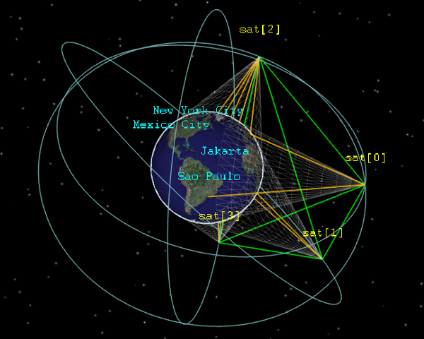

References


OMNEST simulation software has been chosen by R&D staff, researchers and engineers worldwide to investigate scenarios and design alternatives in various wired/wireless networks, interconnection networks, queueing-based performance models and other systems. OMNEST simulations can also be embedded into your own software products.
Models exist for Internet protocols, wireless networks, switched LANs, TSN, peer-to-peer networks, media streaming, mobile ad-hoc networks, mesh networks, wireless sensor networks, vehicular networks, NoCs, optical networks, HPC clusters, cloud computing, SANs, and more... Explore the models »
Simulation is an art, and one can save a substantial amount of time by choosing the right tools and approach (model library, detail level, etc.) from the start. A license purchase entitles you to a one-hour video discussion session with our developers, where you can receive expert advice to reach your project goals sooner.
We have been designing simulations for well over a decade, and this experience may be useful to you. By consulting with our experts early in your projects, you can avoid costly detours and make the right design decisions from the start.
You can embed the simulation kernel or whole simulations into your software products.

The OMNEST runtime user interface allows you to build 3D animations for your simulation model employing the widely used OpenSceneGraph library.